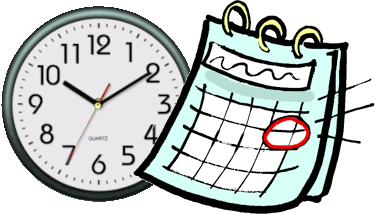
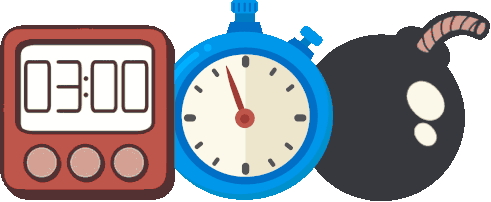
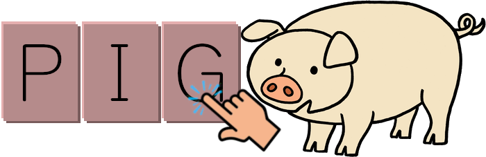
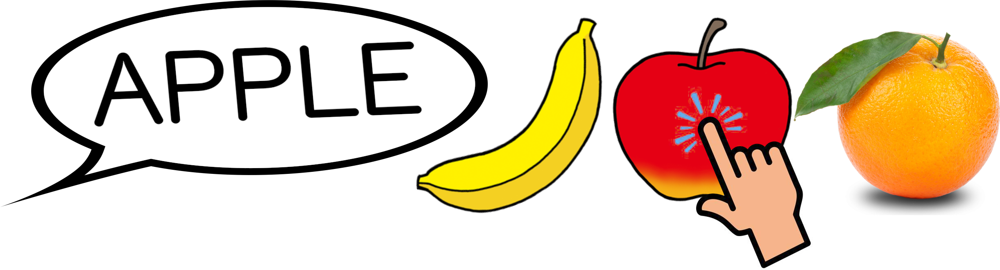
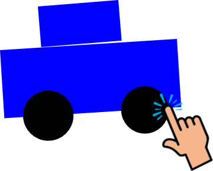

Current Time, Date and Weather*
At the start of the lesson, display the current time and date.
*Weather must be selected manually :)

Timer/Stopwatch/Time Bomb
Provides a convenient timer and stopwatch.
The "Time Bomb" is a random-length timer.
Caution: the alarm is rather loud!
Student Number Lottery
Choose a student at random by their "student number".

Spelling Practice
Start spelling one of 500+ common English words (nouns).
The spelling will autocomplete and display a picture.
Feel free to download and print the reading practice cards (mini picture dictionaries).
Note: Does not accept keyboard input, only touch-screen input

Pointing Game
Select some word sets and start a pointing game.
Tap the picture that matches the word.
Faster answers get more points but you only get three chances.

Draw with Shapes
Draw using simple shapes and colors.
Choose a shape and color, then place the shape using anchor points. (Look carefully at the shape icons to see where the anchor points are located.)
The "anchor points" system is not very intuitive for students in my experience, but once they get the hang of it, it's fun.
You can "turn off the lights" to make your drawing into a silhouette quiz.
Visit "the Back Room"
Miscellaneous content, mostly for my personal use.
There you will find videos, slideshows, books, printables, and minigames that can be played in a web browser on a laptop or tablet.